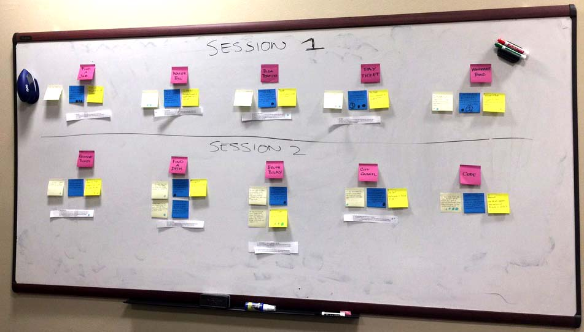

Dallas City Hall Menu Redesign
UX/UI Design
Worked closely with the stakeholders, product manager, UX designers and front end developers to identify and define pain points of the City of Dallas website and work through UX/UI methodologies with both quantitative and qualitative data to redesign and improve the global menu navigation.
Role: UX/UI Designer
Programs: Paper & Pen, Sketch, Adobe XD, Illustrator & Photoshop
Year: 2017
Challenges: Improve the City of Dallas mega menu design so that it is easier to read and find tasks.
Project Outcome: By identifying pain points and developing a plan to test and follow user testing results we successfully improved the global navigation by making it easier to digest and find content.
Old Mega Menu Design
Personas
Scenarios
Concepts

Usability Test Session

Redesign Findings Report

Final Menu Redesign
Back